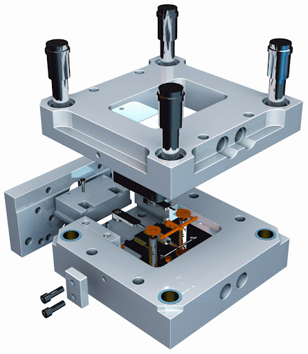

NOSOTROS
MISIÓN
Aportar valor diferenciador a través del diseño y asesoramiento individualizado que nos permiten crear moldes para la inyección de plástico, maquinaria industrial y productos metálicos únicos, de alta calidad y fiables. La mejora continua de nuestros procesos y una plantilla de profesionales cualificados y con experiencia, son los pilares imprescindibles para conseguir nuestro objetivo principal: la satisfacción de nuestros clientes, ofreciéndoles productos que le diferencien de la competencia.
VISIÓN
Ser un referente en el levante español en la fabricación de moldes para la inyección de plástico
y aumentar nuestra producción de troquelados y piezas metálicas. Satisfacer a nuestros clientes
ofreciéndoles productos personalizados de alta calidad y reduciendo los plazos de entrega, gracias
a un crecimiento continuo y sostenible.
VALORES
VALORES
En Matrixcert, S.L. nos mueve el afán de superación, de hacer que cada día la calidad de nuestros productos sea mejor. El respeto, la honradez y la dedicación de nuestro personal son los que hacen posible que podamos ofrecer a nuestros clientes los mejores productos y un excelente servicio, no solo hacia nuestros clientes, sino también con nuestros colaboradores más cercanos. Tenemos un compromiso con el medio ambiente y hemos implantado unos procesos de reciclaje de cada uno de los desechos que se producen en la empresa.
